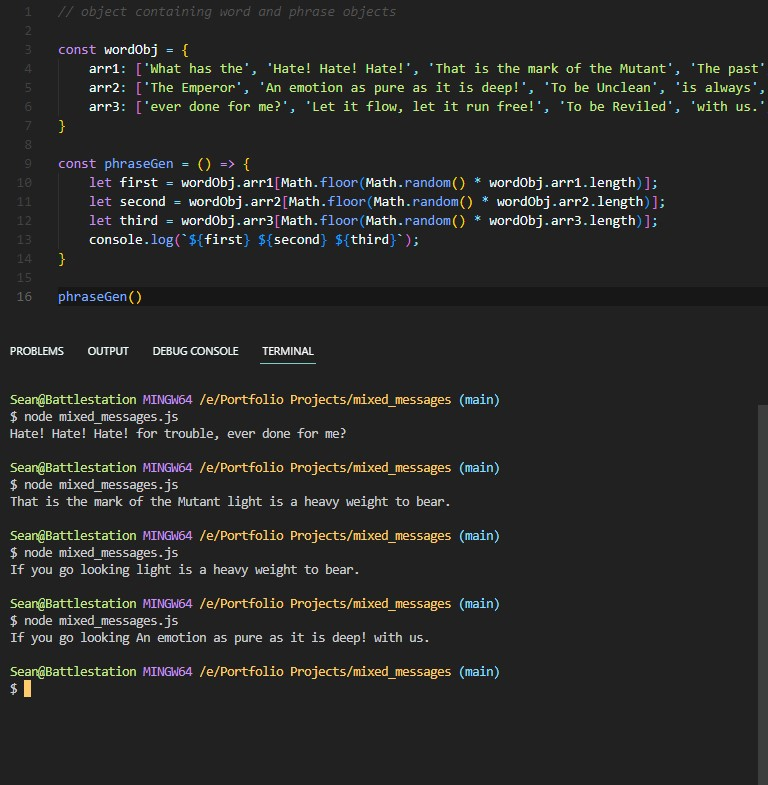

About Me
Hi, I'm Sean. At this time I'm an aspiring web developer. In my current life I'm a professional
orchestral musician playing the 'cello, but it's time for something different. To that end I've been
studying full-stack development on Codecademy.
A
few things about me:
- My formal education:
- Bachelor of Music (performance) - University of Manitoba
- Master of Music (performance) - University of Wisconsin - Madison
- Current development skills:
- HTML
- CSS (intermediate)
- JavaScript (intermediate)
- GitHub (beginner)
- Work Experience:
- Symphony Orchestras:
- Winnipeg Symphony Orchestra
- Hyogo Performing Arts Center Orchestra
- Madison Symphony Orchestra
- Dubuque Symphony
- Other work:
- Freelance Performing and Teaching
- Residence Manager
- Data Entry
- Sandwich Artist
- Pizza Call Centre Lackey
- Symphony Orchestras:
- Cooking
- PC hardware and gaming
- Reading
- Fine whiskies (especially single malt Scotch)
- Japanese
Projects
Hobbiton Real Estate
Hobbiton Real Estate is my first serious attempt at a 'complete' website. It's completely static (as I had yet to learn any JavaScript), but it is responsive and I did my best to make it attractive yet functional (e.g. the fixed navbar). This is very much a student project, but I am leaving it as a snapshot of my progress. Here is a link to the files on GitHub.Mixed Messages

A JavaScript project that generates some nonsense phrases out of fragments held in a few arrays. Originally written with NODE.js in mind, I've adapted the functionality to work on this page. The version on GitHub also betrays my fondness for Warhammer 40,000.
Top